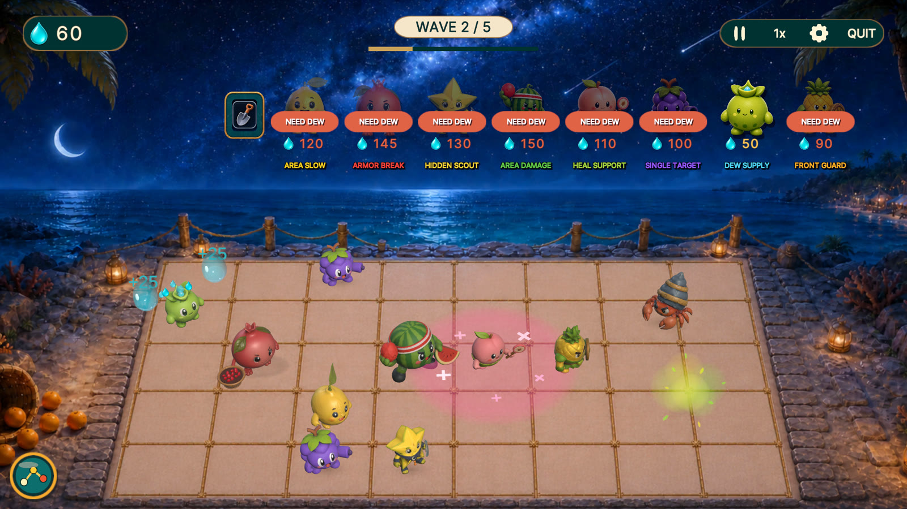
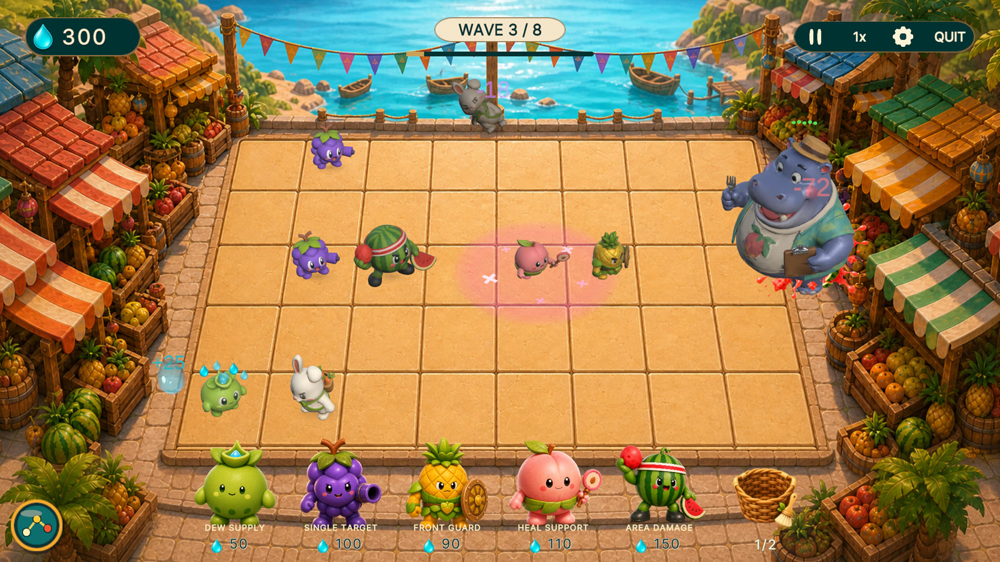
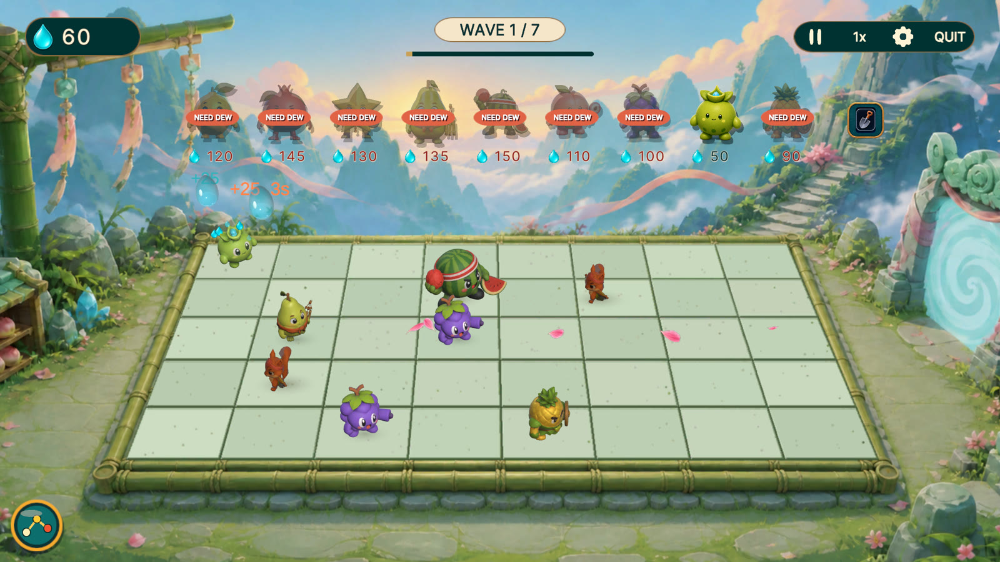

PERCUMA DI IPHONE, IPAD DAN ANDROID
Satu lorong hampir tumbang. Apa pilihan anda?
Guna Dewdrops sekarang untuk mempertahankannya, atau simpan untuk wira buah yang lebih kuat? Perhatikan lima lorong sambil musuh dan bos besar mara.
- Boleh main luar talian selepas pemasangan
- Tiada iklan
- Tiada pembelian dalam aplikasi



PILIH MASA YANG TEPAT
Lima lorong, tiga dunia, satu pasukan buah
Pertahankan lima lorong
Kenal pasti lorong yang lemah sebelum musuh sampai ke gerai.
Urus Dewdrops
Tempatkan atau kuatkan wira sekarang, atau simpan sumber untuk kemudian.
Susun pasukan
Gabungkan wira untuk bertahan, menyembuh, memperlahankan dan menyerang.
Hadapi bos besar
Ubah susunan apabila ancaman baharu muncul di Sunny Market, Moonlit Coast dan Cloudcrest.
Tangkapan skrin di atas ialah permainan sebenar dengan antara muka bahasa Inggeris. Teks permainan dalam aplikasi menggunakan bahasa Inggeris.
MULA BERMAIN
Pilih kedai untuk peranti anda
Percuma untuk iPhone, iPad dan Android. Boleh main luar talian selepas pemasangan.